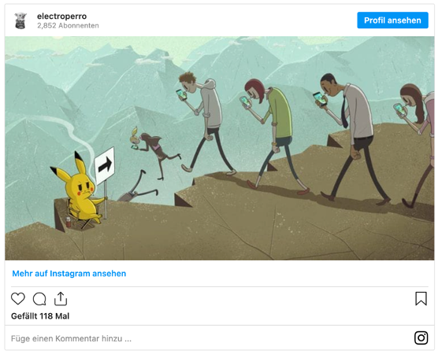
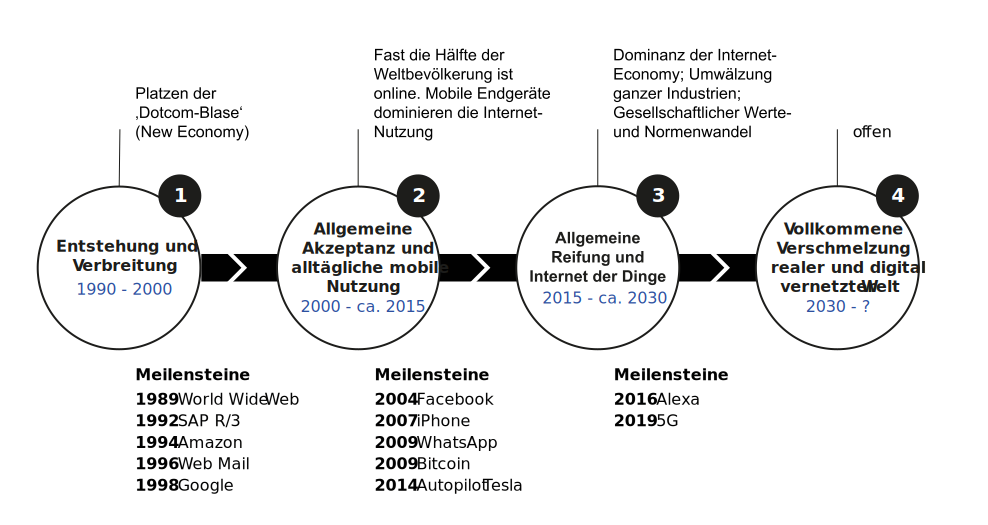

K2 Das digitale Zeitalter
Grundzüge Informationsmanagement (GIM)
Lernergebnisse
Nach dieser Einheit
- wissen Sie, was man unter digitalem Zeitalter versteht,
- verstehen Sie, auf welchen Ebenen im digitalen Zeitalter Vernetzung durch digitale Technologien vorangetrieben wird und können die Vernetzung und die Konsequenzen an Beispielen zeigen,
- können Sie die grundlegenden Mechanismen des digitalen Zeitalters erläutern und Beispiele zu geben,
- können Sie die Entwicklungsstufen anhand der Treiber und Mechanismen des digitalen Zeitalters erläutern und
- können Sie den Problemraum des digitalen Zeitalters anhand des Konzepts VUCA erläutern und auf die grundlegenden Mechanismen des digitalen Zeitalters beziehen.
Einleitung
Karikaturen
Was moderne Technik mit unserem Leben macht …


Zitate
Ich habe früher dazu einmal „Neuland“ gesagt. Das hat mir einen großen Shitstorm eingebracht. Deshalb will ich das jetzt nicht einfach wiederholen. Jedenfalls ist es aber in gewisser Weise noch nicht durchschrittenes Terrain. […] Das Ganze ist im Grunde eine revolutionäre Phase.
Angela Merkel, ehemalige Bundeskanzlerin
Every successful organization has to make the transition from a world defined primarily by repetition to one primarily defined by change. This is the biggest transformation in the structure of how humans work together since the Agricultural Revolution.
Bill Drayton, Social Entrepreneur, CEO of Ashoka
Besonderheiten
Eigenschaften
Als das digitale (Informations-) Zeitalter wird der Zeitabschnitt verstanden, der maßgeblich durch Informations- und Kommunikationstechnik geprägt ist (Claudia Lemke, Brenner, und Kirchner 2017).
- Wertschöpfung ist geprägt von digitalen Daten (Verarbeitung, Übertragung)
- Arbeits- und Lebenswelt ist durchdrungen von IT (Prozesse, Produkte, Dienstleistungen)
- Technlogische Vernetzung ermöglicht und beschleunigt wirtschaftliche und soziale Vernetzung
- Grenzen von Raum und Zeit lösen sich zunehmend auf
Die unzähligen Möglichkeiten der Vernetzung von Daten durch die digitale Speicherung, Verarbeitung und Übertragung (Digitalisierung) sowie der technologische Fortschritt (leistungsfähige Netzwerke, Mobilität und Miniaturisierung von IT) prägen gesellschaftliche Entwicklungen im digitalen Zeitalter und entscheiden über soziale Strukturen und wirtschaftliche Beziehungen im digitalen Zeitalter.
Netzwerke ermöglichen die Verbindung von Informationen und Daten durch die Nutzung von Datenübertragungstechnologien. Diese können stationär als Kabelnetz oder mobil mittels Funktechnologien in Mobilfunknetzen vorliegen. Das Internet ist das stationäre und mobile Kommunikationsmedium des digitalen Zeitalters. Technologische Vernetzung vereinfacht Vernetzung auf sozialer und wirtschaftlicher Ebene. Die zunehmende Vernetzung von Daten führt zur Auflösung etablierter Unternehmens- und Organisationsformen, schafft neue Möglichkeiten der Kommunikation sowie der Zusammenarbeit und generiert neue Geschäftsmodelle und -lösungen (Claudia Lemke, Brenner, und Kirchner 2017, p. 14).
Mobilität im digitalen Zeitalter bedeutet in erster Linie die Auflösung von Raum und Zeit als Determinanten zur Erstellung und Nutzung von Informationen. Technologische Voraussetzungen für Mobilität sind leistungsfähige Funknetze, mobile Endgeräte und entsprchender Software (Claudia Lemke, Brenner, und Kirchner 2017, p. 14).
Die Corona-Pandemie hat die Potenziale der Mobilität eindrückglich unter Beweis gestellt. So konnten beispielsweise Studierende ohne die Hochschule physisch zu betreten, Vorlesungen oder Seminare virtuell besuchen. Außerdem haben viele Hochschulen festgestellt, dass mit ihren Veranstaltungen weltweit Millionen Zuhörer erreicht werden können. Es wurde deutlich, dass Menschen für Vieles nicht mehr an bestimmte Orte und Zeiten gebunden sind. Studierende können prinzipiell alles lernen, was ihnen an Wissen zur Verfügung gestellt wird.
Miniaturisierung, also die Verkleinerung von IT Hardware führt in Verbindung mit intuitiven Formen der Mensch-Computer-Interaktion (bspw. Touchscreens, Virtual Reality) zu einer zunehmenden und allgegenwärtigen Nutzung von IT. Einfach zu nutzende Anwendungen und die Verfügbarkeit mobiler Funknetze bilden die Basis für innovative Wertschöpfung im digitalen Zeitalter (bspw. internetbasierte Geschäftsmodelle, Produkte und Dienstleistungen) (Claudia Lemke, Brenner, und Kirchner 2017, p. 15).
Evolutionsstufen

Eine Beschreibung der Evolutionsstufen finden Sie in oder in Kurzform hier.
Die Evolutionsstufen zeigen die Weiterentwicklung in den Bereichen Digitalisierung, Vernetzung, Mobilität und Miniaturisierung über den Zeitverlauf. Im Rückblick werden die grundlegenden Phänomene und Mechanismen der Technologien des digitalen Zeitalters erkennbar.
Vernetzung
Vernetzung meint im technologischen Sinn die Verbindung von Informationen und Daten durch die Nutzung von Datenübertragungstechnologien in Form physikalischer Netzwerke. Die zunehmende Vernetzung auf technologischer Ebene ermöglicht und vereinfacht Vernetzung auf sozialer und wirtschaftlicher Ebene.
Ein Beispiel für die technologische Vernetzung ist das Internet of Things (IoT). Aufgrund der weiter fortschreitenden Miniaturisierung werden Rechner zunehmend auch in Alltagsgegenstände bzw. Dinge integriert. Werden diese “Dinge” dann mit dem Internet verbunden, um Prozesse zu steuern, spricht man häufig von IoT. Im privaten Umfeld sind sogenannte Smart Homes, also die Vernetzung von Aktoren und Sensoren im Haus bzw. in der Wohnung ein prominentes Beispiel für IoT. Diese Art der technologischen Vernetzung von Geräten und Daten ermöglicht völlig Arten der Wertschöpfung.
Das IoT als anpassungsfähiges, selbstkonfigurierendes Netzwerk vernetzt virtuelle und physische Gegenst nde unter Verwendung von Standardkommunikationsprotokollen miteinander, um durch das Einbinden ins Netzwerk als Informations- und Kommunikationstechnologie (IKT), die Interaktion zwischen den Gegenständen und den Menschen unter Verwendung der gesammelten Informationen zu steigern (Leimeister 2021, p. 97).
Datenvolumen
Die zunehmende technologische Vernetzung führt unter anderem auch dazu, dass im digitalen Zeitalter enorme Mengen strukturierter und unstrukturierter Daten erzeugt und übermittelt wird. Die Vernetzung dieser Daten ermöglicht und beschleunigt Veränderungen in Wirtschaft (bspw. neue Geschäftsmodelle) und Gesellschaft (bspw. abnehmende Anonymität).
Gesetzmäßigkeiten
Mechanismen
Der technischen Fortschritt im digitalen Zeitalter scheint die grundlegenden Mechanismen des digitalen Zeitalters abzubilden.
Diese werden oft auch als Gesetzmäßigkeiten des digitalen Zeitalters bezeichnet und basieren sowohl auf technologischen als auch kommunikativen und sozialen Mechanismen (Claudia Lemke, Brenner, und Kirchner 2017, p. 23), wie beispielsweise
- Moore’s Law,
- Gilder’s Law,
- Metcalfe’s Law und
- dem Grundsatz Code is Law
Moore’s Law
Die Leistung in der digitalen Hardware wächst exponentiell
Das Mooresche „Gesetz“ besagt, dass sich bei gleichem Preis die Komplexität integrierter Schaltkreise und damit die Leistungsfähigkeit der Informations- und Kommunikationstechnik (IKT) alle 18 Monate verdoppelt (Moore u. a. 1965).
Das Gesetz zeigt, dass im digitalen Zeitalter regelmäßige Leistungsschübe und damit die Voraussetzung für Innovationssprünge zu erwarten sind.
Gilder’s Law
Die Übertragungsleistung digitaler Netze wächst exponentiell
Das Gildersche „Gesetz“ besagt, dass sich die Bandbreite der Datenübertragung mindestens dreimal schneller als die Steigerung der Leistungsfähigkeit der Computer erhöht, also dass sich ca. alle 6 Monate die Datenübertragungsrate bei gleichbleibender technologischer Basis verdoppelt (Gilder 2000).
Die Verfügbarkeit von Daten und die notwendige Bandbreite zur Übertragung beeinflussen sich wechselseitig.
Metcalfe’s Law
Ab einer bestimmten Größe eines Netzwerks übersteigt der Nutzen die Kosten
Metcalfesches Gesetz besagt, dass der Wert eines Netzwerkes im Quadrat mit der Anzahl seiner verbundenen Nutzer steigt (Claudia Lemke, Brenner, und Kirchner 2017).
Die Faustregel geht davon aus, dass der Nutzen Netzwerkes proportional zur Anzahl der möglichen Verbindungen zwischen den Teilnehmern (also zum Quadrat der Anzahl der Knoten) wächst, während die Kosten nur proportional zur Anzahl der Knoten selbst wachsen.
Beispiel Soziale Netzwerke Je mehr Nutzer ein soziales Netzwerk hat, umso attraktiver wird dieses, weil so die Chancen steigen, dort die eigenen Freunde und Bekannten zu finden. Und je mehr Nutzer ein Netzwerk hat hat, desto mehr Geld verdient es (bspw. durch Werbung). Mit diesen Gewinnen kann nicht nur das Netzwerk verbessert, sondern durch den Zukauf von Unternehmen (anderen Netzwerken) neue Märkte erschließen und das Netzwerk erweitern. So kann man beispielsweise die Dominanz von Facebook erklären, aber auch die von Amazon
Code is Law
Technologie bestimmt wie Freiheit und Rechte definiert werden
Der Begriff “Code is Law” besagt, dass im Programmcode festgelegte Regeln eine quasi-gesetzgeberische Macht haben (Lessig 2009).
Das bedeutet, dass der Programmcode fundamentale gesetzgebende Element des Internets bzw. des digitalen Zeitalters ist. Software kann also über Rechte und Freiheit bestimmen.
Diese Regeln werden oft implizit und beiläufig festgeschrieben und eben nicht im Parlament diskutiert. Es wird deshalb regelmäßig eine stärkere Rolle des Staates bei der Regulierung des Internets gefordert, um zumindest verfassungsrechtlichen Grundrechte zu schützen.
Beispiele für Code is Law
- Chinas Social Credit Score
Allgegenwärtige Überwachung und Vergabe von Punkten für aus Sicht der Regierung positives Verhalten bzw. Entzug für negatives Verhalten mit dem Ziel der Verhaltensänderung. - Facial Recognition Surveillance
Große Städte wie London setzen Gesichtserkennung ein, um Verdächtige in großen Menschenmassen zu identifizieren und strafrechtliche Untersuchungen einzuleiten
Herausforderungen
VUCA
Der Problemraum des digitalen Zeitalters
Das digitale Zeitalter zeichnet sich durch Volatilität (volatility), Unsicherheit (uncertainty), Komplexität (complexity) und Mehrdeutigkeit (ambiguity) aus. Diese Eigenschaften werden unter dem Synonym VUCA zusammengefasst.
Gründe dafür liegen in der Digitalisierung, welche eine schnellere Produktentwicklung fordert, der Globalisierung, aber auch in ver nderten Bedürfnissen und Arbeitsweisen der Mitarbeiter und stark individualisierten Kundenbedürfnissen. Diese Umgebung fordert von Unternehmen eine hohe Agilität, flache Hierarchien und kurze Informations- und Entscheidungswege, um ihre Wirtschaftlichkeit im Rahmen der schnellen Veränderungen abzusichern und zu steigern (Leimeister 2021, p. 283).
- Volatilität: Die Welt im digitalen Zeitalter verändert sich ständig, wird instabiler, Veränderungen werden unvorhersehbarer, immer drastischer und immer schneller
- Unsicherheit: Vorhersehbarkeit und Berechenbarkeit von Ereignissen nehmen rapide ab, Prognosen und Erfahrungen aus der Vergangenheit verlieren ihre Gültigkeit und Relevanz, Planung wird immer schwieriger
- Komplexität: Probleme und deren Auswirkungen werden vielschichtiger und schwerer zu verstehen, Ebenen vermischen sich, Ursache und Wirkung sind nicht mehr klar zu erkennen
- Mehrdeutigkeit: „One fits all“ und „best practice “ war gestern, Eindeutigkeiten lösen sich auf, Anforderungen an Organisationen sind widersprüchlicher und paradoxer, das persönliche Wertesystem wird auf die Probe gestellt
Konsequenzen
Organisationen brauchen neue Management- und Führungsansätze, um Erfolg unter im digitalen Zeitalter zu gewährleisten.
Whereas the heroic manager of the past knew all, could do all, and could solve every problem, the postheroic manager asks how every problem can be solved in a way that develops other peoples capacity to handle it.
Charles Handy, irischer Wirtschafts- und Sozialphilosoph
Lösungsraum
Vom Problemraum zur Lösungraum
Die sich aus der Komplexität des digitalen Zeitalters ergebenden Herausforderungen erfordern Fähigkeiten, die sich ebenfalls mit dem Akronym VUCA beschreiben lassen.
- Volatility –> Vision
Ein Bild von einer wünschenswerten Zukunft entwickeln - Uncertainty –> Understanding
Verständnis über Zusammenhänge entwickeln - Complexity –> Clarity
Fokus, Resourcen dort einsetzen, wo sie am besten wirken - Ambiguity –> Agility
Anpassungsfähig und beweglich sein und bleiben
✏️ Aufgaben
A1: Grundbegriffe
Digitalisierung, Vernetzung, Mobilität, Miniaturisierung sind die zentralen Merkmale des digitalen Zeitalters.
Erläutern Sie die Merkmale und geben Sie jeweils ein Beispiel, an dem das Merkmal deutlich erkennbar ist.
A2: Auswirkungen
Unser ehemaliger Bundespräsident Joachim Gauck sagte 2013:
[Die Digitalisierung verändert] das Verhältnis vom Bürger zum Staat, das Bild vom Ich und vom Anderen. Ja, wir können sagen: Unser Bild vom Menschen wird sich ändern.
Diskutieren Sie, ob Sie dieser Aussage zustimmen. Sammeln Sie Argumente für Ihre/ihre Position.
A3: Design Thinking
Um im digitalen Zeitalter erfolgreich sein zu können, müssen Unternehmen sicherstellen, dass sie die sich ständig verändernden Bedürfnisse der Nutzer adäquat adressieren. Eine wichtige Aufgabe der Wirtschaftsinformatik/des Informationsmanagements ist es, Unternehmen dabei zu unterstützen. Ein hilfreicher Ansatz ist die Methode Design Thinking.
Recherchieren Sie zu der Methode und versuchen Sie folgende Fragen zu beantworten:
- Was zeichnet wertvolle Problemlösungen/Innovationen aus?
- Welchem iterativen Prozess folgt die Design Thinking Methode?
- Was ist ein MVP und weshalb ist dieser wichtig?
- Was bedeutet „Fail fast, fail forward”?
- Weshalb sind agile Methoden vor allem im digitalen Zeitalter wichtig?
Design Thinking ist Denkhaltung, Vorgehensmodell und Methodenbaukasten gleichermaßen. Design Thinking zielt darauf ab, mit Methoden des Desings nutzer-und kundenorientierte Ergebnisse zur Lösung von komplexen Problemen zu liefern. Die Methode baut auf einem interativen Prozess und den drei Prinzipien Kundenzentrierung, Iteration und Prototyping sowie die Lösungsoffenheit auf.
Der Design-Thinking-Prozess stellt den Menschen und seine Bedürfnisse in den Mittelpunkt. Es wird daher häufig von Human-Centered-Design gesprochen. Voraussetzung dafür ist, dass eine potenzielle Zielgruppe bereits bei Beginn des Prozesses gegeben ist. Durch Rückkopplung wird diese frühzeitig in die Problemdefinition und Lösungsfindung einbezogen. Mögliche Nutzer werden befragt aber auch beobachtet und begleitet. Lösungen und Ideen werden in Form von Prototypen im Design Thinking früh sichtbar und kommunizierbar gemacht, damit potenzielle Anwender sie – noch lange vor der Fertigstellung oder Markteinführung – testen und Feedback geben können.
Nicht-Designer, beispielsweise Entrepreneure oder Manager, können mithilfe von Design Thinking neue Sichtweisen auf Probleme und mögliche Lösungen erhalten. Die Methode kombiniert Empathie gegenüber den Nutzern und seinen Problemen mit Kreativität auf der Suche nach geeigneten Lösungen unter Einsatz rationaler Überlegungen bei der Analyse, Bewertung und Auswahl der verschiedenen Alternativen. Ziel des Design Thinking ist die Entwicklung von Innovationen, beispielsweise die Entwicklung innovativer Produkte, Services oder Erlebnisse.
Quelle: C. Lemke, Brenner, und Kirchner (2017)
A4: Code is Law
Lesen Sie folgenden Artikel auf Heise.de Amazon-Zusteller: KI-Kamera im Führerhaus senkt Lohn durch falsche Strafen
- Erläutern Sie das Konzept Code is Law anhand dieses Beispiels.
- An welchen Werten sollten sich Programmierer, Wirtschaftsinformatiker und Informationsmanager orientieren?